地政学
ブルネイはマレーシア領サラワクに囲まれ、南シナ海に開く小国です。首都には王宮、政府、外交、金融が集まり、石油とガスの富、ASEAN外交、海洋権益、隣国との往来を調整します。静かな首都にも大きな海の戦略があります。
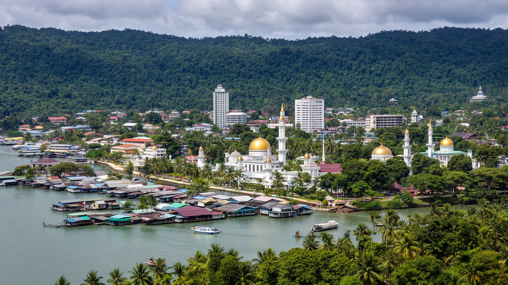
🇧🇳 ブルネイ / ブルネイ・ムアラ地区 / World City Atlas
ブルネイ川沿いに広がる小さな首都です。王制、イスラム、石油・ガス収入、行政、低層住宅、水上集落、熱帯雨林、穏やかな商業が、豊かな福祉国家の日常を形作ります。
都市の骨格
バンダルスリブガワンは、巨大な高層都市ではありません。ブルネイ川、水上集落、王宮、官庁、モスク、商業地区、郊外住宅が近くに並び、国家の富と信仰と暮らしが静かな密度で重なります。
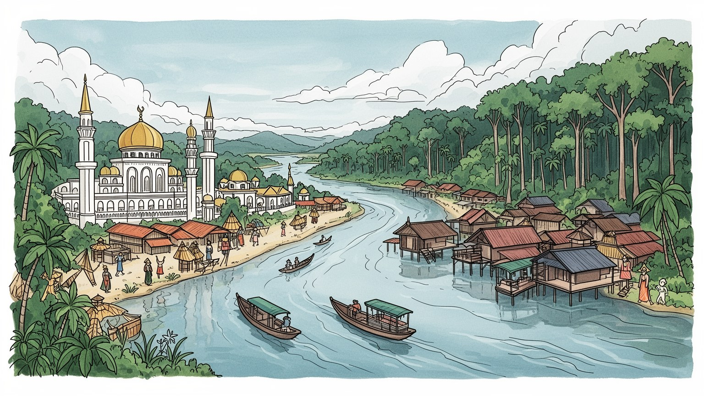
ブルネイはマレーシア領サラワクに囲まれ、南シナ海に開く小国です。首都には王宮、政府、外交、金融が集まり、石油とガスの富、ASEAN外交、海洋権益、隣国との往来を調整します。静かな首都にも大きな海の戦略があります。
経済の柱は石油・ガスですが、首都では行政、教育、医療、金融、小売、観光、建設、飲食、外国人労働が日常を支えます。安定した公的部門と民間多角化の遅さが同時に見えます。資源国家の働き方を映す大切な現場です。
国教のイスラム、マレー王制、宮廷儀礼、モスク、ラマダン、家族行事が都市の時間を整えます。華人、先住諸民族、外国人労働者も暮らし、穏やかな首都に複数の生活文化が重なります。祝祭も暮らしを強く結びます。
旅行者は水上集落、王宮、モスク、博物館、ナイトマーケット、熱帯雨林へ向かいます。住民は車移動、住宅、教育、公共サービス、若者の就職、気候の湿気と雨を抱えて暮らします。穏やかな街にも生活の課題があります。
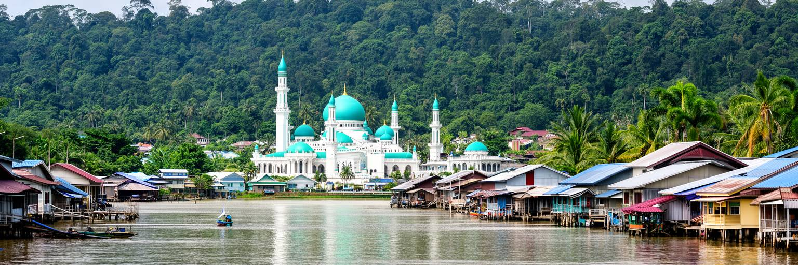
バンダルスリブガワンの都市像は、ブルネイ川から始まります。現在の中心部には官庁、商業施設、モスク、博物館、ホテルが並びますが、その前史は川上と河口を結ぶ水上の王都にあります。川は交通路であり、食料と交易の道であり、王権の舞台でもありました。陸上の道路や橋が整った今も、水上タクシー、桟橋、カンポン・アイールの木造家屋、対岸の緑は、首都が水辺から生まれたことを示します。市街地は大都市のように高層化していませんが、川沿いの短い距離に王制、行政、宗教、観光、日常の買い物が集まります。低い建物と広い空、金色のドーム、熱帯の雲が作る景観は穏やかですが、水害、排水、川の水質、岸辺の再開発という課題もあります。川を眺めるだけではなく、橋を渡り、水上集落の桟橋を歩き、市場やモスクへ戻る動線をたどると、首都の骨格が立体的に見えます。バンダルスリブガワンは、石油富で作られた近代国家の中心であると同時に、川の生活文化を抱えた王都です。その二つを切り離さず読むことが、この都市を理解する出発点になります。観光の水面と住民の通学路が同じ川に重なる点に、首都の奥行きがあります。夕方に川風が弱まり、礼拝の時間が近づくと、水上の家、岸辺の公園、モスクの白い壁が同じ光を受けます。その静かな変化の中に、王都の歴史と現代の生活が重なって見えます。川は境界ではなく、首都の記憶を結ぶ通路です。
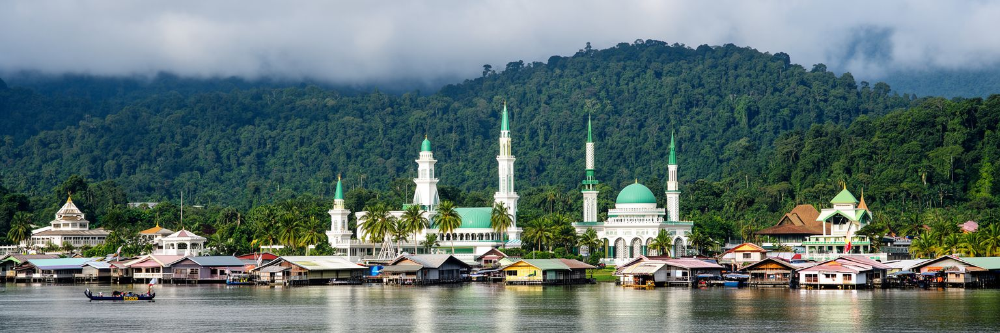
バンダルスリブガワンは、ブルネイの政治制度を最も直接に映す都市です。スルタンを中心とする王制、政府庁舎、官僚機構、王宮、イスラム行政、外交窓口が近い範囲に集まり、国家の意思決定が低層の首都空間に配置されています。イスタナ・ヌルル・イマンは単なる巨大な宮殿ではなく、王権、国家行事、宗教的正統性、福祉国家の象徴として都市の想像力を支えます。ブルネイは人口規模が小さいため、政治の距離も比較的近く、行政サービス、教育、医療、住宅、奨学金、公務員雇用が住民の日常に強く関わります。一方で、豊かな資源収入に支えられた安定は、政治参加、表現、民間経済の自立、若者の選択肢という問いも生みます。首都を歩くと、威圧的な摩天楼よりも、整った道路、清潔な公共空間、公式行事の気配、宗教施設の存在が目立ちます。国家の権威は高い壁だけでなく、日々の公共サービスと礼儀の中にも表れます。バンダルスリブガワンを読むには、王宮の壮麗さだけでなく、行政がどのように住民の生活を支え、どのような期待を生むのかを見る必要があります。小国の首都では、制度の強さと社会の静けさが近く、その均衡が都市の雰囲気を作っています。公的部門への信頼が高いほど、将来の雇用や改革への期待も首都へ集まります。式典の日だけでなく、窓口の手続きや学校の制度にも王制国家の距離感が表れます。
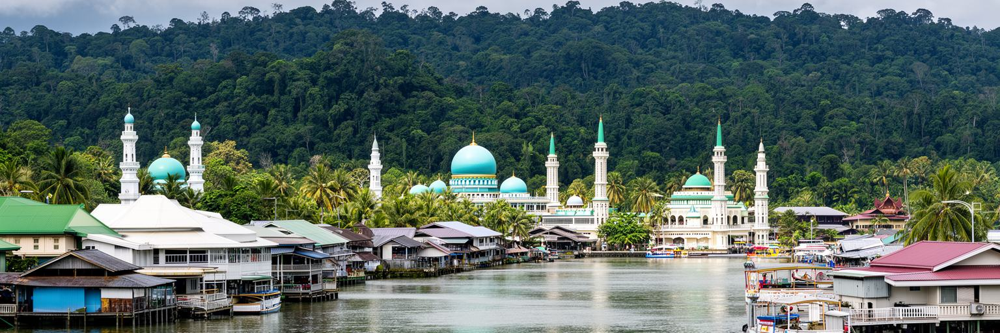
ブルネイの豊かさは、石油と天然ガスによって大きく支えられてきました。生産の中心は首都そのものより西部のセリアや沖合にありますが、資源収入が生む国家財政、公共サービス、公務員雇用、教育、医療、インフラ、金融機能はバンダルスリブガワンに集まります。街の規模は控えめでも、一人当たり所得の高さ、道路の整備、住宅の落ち着き、公共施設の質には資源国家の余裕が見えます。ただし、この豊かさは永続する保証ではありません。エネルギー転換、価格変動、生産量の変化、若い世代の雇用、民間産業の育成は、首都の静かな課題です。行政、銀行、小売、観光、教育、医療、ハラール産業、情報通信をどう育てるかは、国家の将来に直結します。外国人労働者は建設、サービス、家事、飲食、店舗運営を支えますが、彼らの生活条件は豊かさの見えにくい基盤でもあります。バンダルスリブガワンの経済を読む時、華やかな商業中心だけではなく、資源収入がどのように家計、学校、病院、住宅、若者の進路へ変換されているかを見る必要があります。小さな首都の穏やかさは、世界のエネルギー市場と深く結びついています。資源に支えられた安定を、資源後の選択肢へ変えられるかが、都市の次の焦点です。将来の仕事を首都だけに集中させず、国内各地と結ぶ政策もこれからの重要な焦点です。
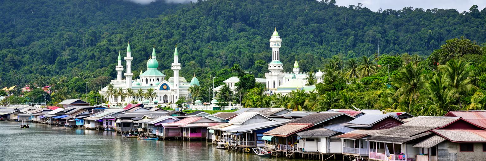
カンポン・アイールは、バンダルスリブガワンを象徴する場所です。観光案内では「東洋のベニス」と呼ばれることがありますが、ここは写真のための風景ではなく、学校、モスク、消防、診療、商店、家族の記憶を持つ生活空間です。高床家屋が桟橋でつながり、水上タクシーが通学、通勤、買い物、来客を運びます。王都の前身として長い歴史を持つ一方、近代化と住宅政策によって陸上へ移った世帯も多く、水上に残る暮らしは保存と更新の両方を求められています。水上集落には共同体の近さ、川との親密さ、涼しさ、観光収入の可能性がありますが、火災、衛生、老朽化、廃棄物、若者の流出、水質、洪水時の安全という課題もあります。訪問者は桟橋を歩く時、生活の場へ入っていることを意識する必要があります。家の前を撮影すること、宗教施設を訪ねること、水上タクシーを使うことは、住民の尊厳と結びつきます。カンポン・アイールを首都の古い名所としてだけ見ると、都市の現在を見落とします。ここでは伝統は固定された展示物ではなく、学校に通う子ども、修理する大工、礼拝へ向かう家族、川を渡る働き手によって毎日続けられています。水上の暮らしを守ることは、首都の記憶を守ることでもあります。同時に安全な設備と公共サービスを更新しなければ、記憶は生活の負担に変わります。
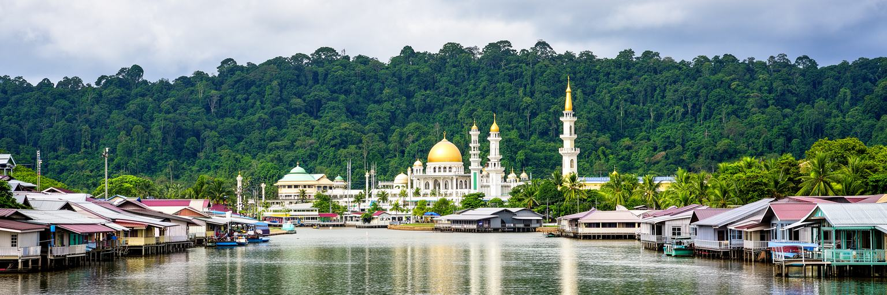
バンダルスリブガワンの都市時間は、イスラムの暦と礼拝に深く結びついています。オマール・アリ・サイフディン・モスクやジャメ・アスル・ハサナル・ボルキア・モスクは、観光名所である前に信仰と国家の象徴です。金曜礼拝、ラマダン、ハリラヤ、宗教教育、家族の食事、慈善、服装、公共のふるまいは、街のリズムを穏やかに整えます。ブルネイではマレー・イスラム・王制の理念が国家の自己理解に深く関わり、宗教施設は都市景観の中心に置かれます。そこには社会をまとめる力がありますが、同時に多様な住民、華人コミュニティ、先住諸民族、外国人労働者、非ムスリムの暮らしをどう包み込むかという問いもあります。首都の公共空間では、礼儀、清潔さ、家族中心の外出、静かな夜の過ごし方が目立ちます。観光客がモスクを訪れる時は、建築の美しさだけでなく、祈りの時間、服装、撮影、静けさへの配慮が必要です。イスラム文化は都市を閉じる壁ではなく、社会の約束事を作る枠組みとして働きます。バンダルスリブガワンでは、信仰と王制と福祉国家が重なり、宗教的な価値が日常の行政、教育、儀礼、家族の関係にまで届きます。その近さが、この首都の落ち着いた表情を生んでいます。祈りの場を尊重して歩くほど、都市の静けさが制度と生活の両方から作られていることが分かります。
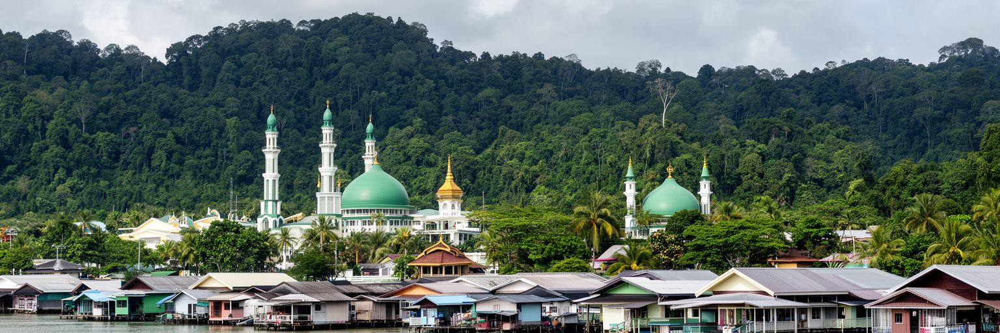
バンダルスリブガワンの日常は、歩行者であふれる巨大都心というより、車で移動する低層の首都圏として経験されます。官庁、学校、モスク、商業施設、住宅地、郊外のショッピング地区が広がり、住民は短い距離でも車に頼ることが多いです。所得水準と公共サービスの高さにより、住宅は比較的落ち着いた印象を与えますが、若者の独立、民間雇用、住宅価格、外国人労働者の住まい、公共交通の弱さは見逃せません。家族での外出、学校送迎、モスクへの移動、夜市での食事、ショッピングモールでの買い物が、都市の生活リズムを作ります。暑さと湿気の強い気候では、日陰、冷房、車、屋内施設が生活の快適さを左右します。一方で、車依存が強いほど、歩道、バス、子どもや高齢者の移動、健康的な公共空間の課題も生まれます。首都の豊かさは、広い道路と静かな住宅だけでなく、誰が公共施設へ行きやすいか、外国人労働者がどこで休めるか、若者が仕事と住まいをどう見つけるかにも表れます。バンダルスリブガワンの暮らしを読むには、観光名所から少し離れ、住宅地、学校、商店、駐車場、夜市、川沿いの散歩道を同じ都市の要素として見る必要があります。静かな日常の中に、福祉国家の安心と将来の選択肢への不安が同居しています。生活の質は、車で移動できる人だけでなく、歩く人にも開かれているかで測られます。
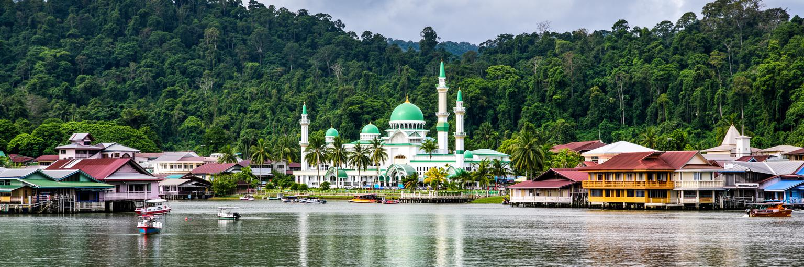
ブルネイの若い世代にとって、バンダルスリブガワンは教育、資格、公務員雇用、専門職、海外留学への入口です。大学、宗教教育機関、職業訓練、図書館、政府奨学金、民間企業の研修が首都周辺に集まり、人口の少ない国で人材を育てる役割を担います。資源収入に支えられた教育投資は大きな強みですが、卒業後の働き口が公的部門に偏ると、若者の選択肢は限られます。情報通信、金融、観光、ハラール産業、環境管理、医療、創造産業をどこまで育てられるかは、首都の未来に直結します。若者は安定した仕事を望む一方、世界の文化、SNS、近隣国の都市、留学経験から新しい生活感覚も持ち込みます。伝統的な家族の期待、宗教的な規範、国家への信頼、個人の職業希望が一人の進路の中で交差します。小さな社会では、人間関係が近く、評判や家族の役割も重くなりやすいです。バンダルスリブガワンの教育を読む時は、学校の制度だけでなく、若者が都市の中でどこに集まり、何を学び、どんな仕事を想像できるかを見る必要があります。資源後の社会を支えるのは、埋蔵量ではなく、学び直し、起業、公共サービス、国際的な技能を持つ人です。首都が若者に挑戦の場所を用意できるかが、静かな豊かさを次世代へ渡す条件になります。教育の成果は、卒業証書よりも、国内で未来を描ける仕事の厚みとして現れます。
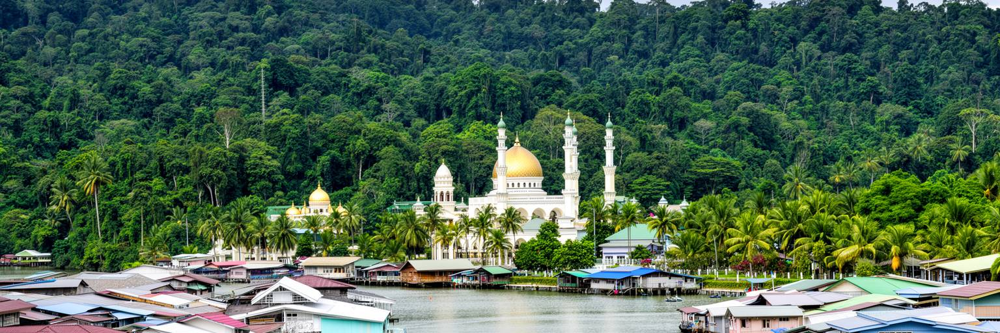
バンダルスリブガワンは、熱帯雨林気候の都市です。年間を通じて高温多湿で、強い雨、川の増水、排水、海風、濃い緑が生活の背景になります。ブルネイは国土の多くに森林を残し、テンブロンの熱帯雨林やマングローブ、河川環境は小国の重要な資産です。首都から短い移動で水辺や森に近づけることは、観光面だけでなく、気候調整、洪水緩和、生物多様性、教育にとっても価値があります。一方で、都市化、道路、住宅、商業施設、河岸整備が進むほど、排水路の能力、水質、廃棄物、斜面や低地の安全が問われます。雨が多い都市では、道路の美しさよりも、詰まらない排水、歩きやすい日陰、滑りにくい歩道、学校や病院へ行ける橋が生活を守ります。気候変動は海面上昇、極端な雨、暑さの増加として首都にも影響します。資源国家としてエネルギーを輸出してきたブルネイにとって、環境政策は国際的な評価だけでなく、国内の水と森を守る実務でもあります。バンダルスリブガワンを読む時、金色のドームと王宮だけでなく、背後の雨林、川岸、排水溝、湿地を都市の一部として見る必要があります。自然の近さは、贅沢な景観ではなく、首都の安全装置です。森と川を守ることは、観光の魅力を保つだけでなく、雨の時にも暮らしが止まらない都市を作ることにつながります。湿気と雨への備えは、毎日の都市管理です。
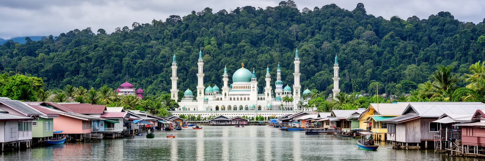
バンダルスリブガワンの観光は、騒がしい歓楽街ではなく、王制、イスラム、川、博物館、水上集落、熱帯の緑をゆっくり読む旅になります。オマール・アリ・サイフディン・モスク、ジャメ・アスル・ハサナル・ボルキア・モスク、ロイヤル・レガリア博物館、カンポン・アイール、ガドンの夜市、川沿いの公園、王宮周辺は、首都の代表的な訪問先です。観光客にとっては、金色のドームや水上集落が強い印象を残しますが、住民にとってこれらは礼拝、通学、買い物、国家儀礼、家族の外出の場でもあります。モスクでは服装、時間、静けさ、撮影への配慮が必要で、水上集落では家の前や子どもの生活を尊重することが大切です。ブルネイは飲酒や夜遊びを目的にした観光地ではなく、文化的な節度を前提とした滞在地です。そのため、観光の質は消費額だけでなく、訪問者が現地の生活規範を理解できるかで決まります。ガイド、宿泊、飲食、交通、土産、博物館、公共案内の充実は、静かな観光を支える仕事を生みます。小さな首都では、観光が増えすぎると生活空間への負担もすぐに見えます。バンダルスリブガワンの魅力は、派手な刺激よりも、王宮、祈り、川辺、夜市の距離の近さにあります。敬意を持って歩くほど、首都の日常そのものが観光資源であることが分かります。短い滞在でも、朝の川と夕方の礼拝時間を意識すると、街のリズムが見えてきます。
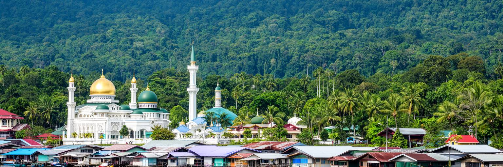
バンダルスリブガワンは、規模は小さくても東南アジアの接続を読む上で重要な首都です。ブルネイはボルネオ島北部でマレーシアのサラワクに囲まれ、国内も西部とテンブロン地区が分かれています。橋、道路、空港、港、国境通過は、住民の買い物、親族訪問、通勤、観光、物流を左右します。首都から近いブルネイ国際空港は、シンガポール、クアラルンプール、マニラ、ジャカルタ、バンコクなどとの移動を支え、ASEANの会議や外交、ビジネスの窓口にもなります。南シナ海のエネルギー、海洋権益、気候政策、ハラール市場、イスラム金融、教育交流は、首都の行政と企業の課題です。小国であることは弱さだけではありません。意思決定の速さ、資源収入、政治的安定、穏やかな外交姿勢は、地域の中で独自の役割を作ります。一方で、人口と国内市場が小さいため、若者の仕事、専門人材、産業多角化、輸入品の価格は外部との関係に大きく左右されます。バンダルスリブガワンを孤立した王都として見ると、この広い接続を見落とします。空港の到着ロビー、国境へ向かう道路、港の貨物、ASEAN会議のホテル、留学生の移動を重ねると、首都は静かな外観以上に国際的です。地域とのつながりをどう広げるかが、資源後の経済と若者の選択肢を左右します。小さな首都の外交は、日常の移動と同じ道路や空港から始まります。
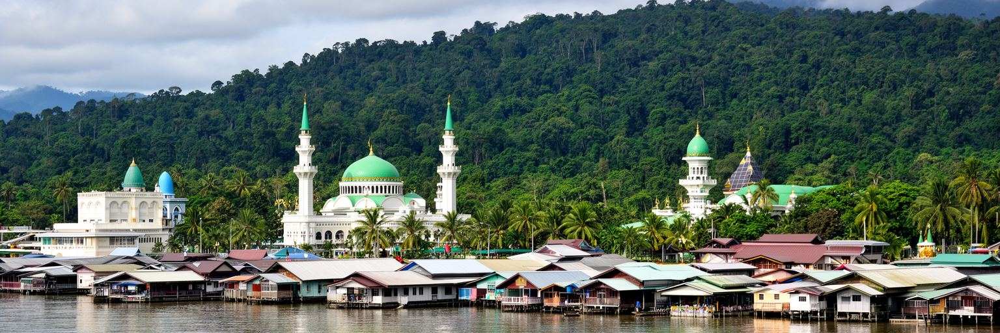
バンダルスリブガワンを読む面白さは、都市の大きさではなく、国家の要素が近距離に集まっている点にあります。王宮、政府、モスク、川、水上集落、博物館、学校、住宅、夜市、空港、熱帯雨林への入口が、穏やかな首都圏の中で互いに結びついています。石油・ガス収入は福祉、教育、医療、道路、住宅の安心を支えますが、資源後の仕事、民間産業、若者の進路、外国人労働者の生活、気候リスクという課題も残します。イスラムと王制は都市の秩序を作り、公共空間の静けさや礼儀を支えます。同時に、多様な住民がどのように暮らし、どの程度発言できるかも見なければなりません。カンポン・アイールは観光名所である前に、王都の記憶を残す生活の場です。森と川は美しい背景であるだけでなく、洪水を和らげ、都市の水と空気を守る基盤です。この首都は、巨大な混雑や貧困のドラマを前面に出す都市ではありません。むしろ静けさの中に、資源国家の安心、制度への信頼、将来の転換への不安が重なります。バンダルスリブガワンを歩くことは、小国が富、信仰、王制、環境、地域外交をどのように日常へ編み込んでいるかを読むことです。低い空の下で川を渡り、モスクの時間を待ち、夜市で食べると、この都市の穏やかさが偶然ではなく、多くの制度と労働に支えられていることが見えてきます。